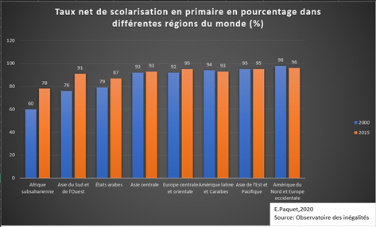

a) La scolarisation des enfants pour le pré primaire dans le monde
Dans cette partie, nous allons étudier les données d'éducation dans le pré primaire et essayer de constater les différences selon les pays du sud et les pays du nord.
Pour cela, nous allons observer différentes cartes.
Le premier tableau de bord a pour but d'observer la scolarisation des petits enfants dans le monde. Pour cela, les cartes ont été effctuées avec le taux brut d’inscription et le taux net de scolarisation. La différence entre ces deux taux est le mode de calcul.
Constat: On remarque le taux brut et le taux net de scolarisation ont augmenté au cours de ces dernières années. La carte représentant le taux net est plus significative lors de sa lecture puisque les valeurs sont comprises entre 0 et 100. Au fil des années, des disparités persistent et nous constatons que les taux les plus bas se trouvent dans les pays du sud. En effet, observons le continent Africain, les couleurs claires qui correspondent à des valeurs basses perdurent au cours des années. En opposition, les pays du nord au fil des années sont représentés par les couleurs les plus foncées, ce qui signifie des valeurs élevées pour les taux de scolarisation brut et net et par conséquent des pays où la scolarisation est efficace.
Le deuxième tableau de bord a pour but d'observer des informations complémentaires concernant cette thématique. Pour cela, nous allons pouvoir observer l'âge d’entrée officiel à l’enseignement, la durée de l’enseignement pré primaire et enfin l'espérance de vie scolaire(calculé à partir du "nombre total d'années de scolarité qu'un enfant d'un certain âge peut s'attendre à recevoir, en supposant que la probabilité qu'il soit inscrit à l'école à un âge donné soit égale au taux de scolarisation actuel pour cet âge..")
Constat: 3 cartes sont donc proprosées à l'étude. Tout d'abord, on remarque que pour l'espérance de l'enseignement, les taux les plus élevés restent dans les pays du nord. Ce qui signifie qu'un enfant habitant en Europe, Amérique, Russie pourra espérer étudier plus longtemps lors des premières années de sa vie. Cette espérance peut donc avoir plus d'importance pour les parents (mode de garde). On constate cependant que des pays connaissent des augmentations comme la Chine ou bien même le Kazakhstan en 2015. Le système de l'école pré primaire a pu en effet évoluer au cours de quelques années suivant les volontés des politiques. Puis, il y a la carte qui rend compte de l'âge d'entrée officiel selon les pays. L'âge d'entrée officiel varie de 2 à 6 ans. On observe dès la première année donnée que l'âge diffère selon les pays du monde. On ne constate pas comme pour d'autres variables, des différences significatives entre pays du nord et pays du sud. En effet, l'âge peut varier puisque selon les pays, les systèmes éducatifs ne sont pas les mêmes ni les apprentissages. Enfin, la dernière carte de ce tableau de bord est celle concernant la durée de l'enseignement pré primaire. La durée varie de 1 à 5 ans. On constate tout de suite que l'Europe et précisément les pays nordiques ont les chiffres les plus élevés. Cela signifie, que les enfants effectuent une scolarisation plus longue. Sur le continent Africain, le Mali, la Zambia ont une durée d'enseignement de 4 ans. Pour la majorité des pays Africains, les valeurs sont plus basses ou absentes.
b) La scolarisation des enfants pour le primaire dans le monde
« 1 enfant sur 5 qui
est en âge d’aller en école primaire, n’est pas scolarisé dans les pays d'Afrique sub-saharienne, Asie de l’ouest et Asie du sud. »

Dans cette partie, nous allons étudier les données d'éducation dans le primaire et essayer de constater les différences selon les pays du sud et les pays du nord. J’ai essayé de trouver un maximum de variables afin d’effectuer mes cartes et de constater des différences entre les pays du nord et les pays du sud. En effet, les variables sont diverses et concernent différents facteurs qui touchent et influent sur l’école primaire.
Le premier tableau de bord correspond à un constat de la scolarisation avec le taux brut de scolarisation (calculé à partir de la "scolarisation totale du primaire, quel que soit l'âge et exprimé en pourcentage de la population totale de la tranche d'âge d'enseignement du primaire. Le GER peut dépasser 100 % en raison d'inclusions d'étudiants sur-âgés ou sous-âgés à la suite d'une scolarisation précoce ou tardive, et de redoublements") et le taux net de scolarisation ainsi que le nombre d’élèves inscrits.
Constat: Pour les deux premières cartes de ce tableau de bord qui correspondent au taux brut et au taux net de scolarisation, on remarque que les taux croissent au fil des années pour la majorité des pays dans le monde. En effet, lorsqu'on regarde par exemple, l'Amérique du Sud, les taux correspondent à la couleur la plus élevée de la discrétisation. Cependant, on peut observer, concernant le continent Africain, que les valeurs restent plutôt faibles et que pour beaucoup de pays les valeurs sont absentes. On peut donc se demander si cette absence de données ne cache pas une triste réalité. Lorsque nous avons étudier quelques cas lors de nos précédentes recherches, nous avons pu réaliser que l'accés à l'éducation pour les enfants en âge d'aller à l'école primaire était très difficile voir impossible. Grâce à la troisième carte de ce tableau de bord qui correspond au nombre d'enfants inscrits en école primaire entre 1971 et 2019, on remarque que le continent Africain est certes, celui ayant les nombres les moins élevés, mais on peut cependant constater que les nombres augmentent considérablement pendant cette période donnée. Effectivement, si on fait un focus sur l'Ethiopie, le Ghana, la Mauritanie, le Mali, le Niger, la Côte d'Ivoire (etc.), on peut voir que les nombres ne cessent d'augmenter. Il faut donc prendre en compte les augmentations car les pays ne partent pas tous avec les mêmes chances ni les mêmes handicaps. Une des limites de cette carte est donc de ne pas avoir le total de tous les enfants en âge d'aller à l'école puisque sans celui ci, nous ne savons pas quelle proportion d'enfant est scolarisée dans ce pays.
Le deuxième tableau de bord a pour but de mieux réaliser les disparités entre les pays concernant l'accès à l'éducation. Pour cela, nous avons 3 cartes. Tout d'abord, simplement le pourcentage de non-scolarisation puis le taux de redoublants dans l’enseignement primaire (calculé à partir du "nombre d'élèves inscrits dans la même classe que l'année précédente, en pourcentage de tous les élèves inscrits à l'école primaire. Il est calculé en divisant la somme des redoublants de tous les niveaux de l'enseignement primaire par le total des inscriptions dans l'enseignement primaire et en multipliant le résultat par 100") et enfin le taux d'abandon cumuléà la dernière année de primaire (calculé à partir du "total, est calculé en soustrayant le taux de survie de 100").
Constat: Premièrement, nous avons la carte concernant le pourcentage de non scolarisation. Nous allons donc pouvoir constater si les nombres concernant les élèves inscrits sont significatifs pour les pays. Malheuresement, nous remarquons qu'une fois de plus, les pays ayant les pourcentages les plus élevés de non scolarisation se localisent sur le continent Africain. A notre grande surprise, le Niger, le Mali ont des taux très élevés (respectivement 36,72 et 39,27%) en 2015. De plus, en 2015, les pays ayant les taux de non scolarisation les plus élevés dans le monde sont: le Soudan du Sud (69,02%), le Liberia (62,39%), la Guinée Equatoriale (43,20%), l'Erithrée (60,86%). Deuxièmement, concernant le taux de redoublant dans le monde, on observe qu'en 1990, quelques pays en Amérique du Sud ont des taux inférieurs à 17% mais qui correspondent quand même aux pays où les taux sont les plus élevés. On constate cependant que les pays d'Amérique du Sud ont de grandes différences avec les pays du continent Africain. En effet, en 1990, les pays Africains ont des taux très élevés: Chad (33,30%), Afrique Centrale (31,21%), Cameroun (28,63%), Congo (38,52%), Côte d'Ivoire (26,35%) et le Bénin (28%), etc. Il y a aussi quelques pays en Asie mais qui ont des taux inférieurs à 10%. Un pays d'Europe se démarque pour cette variable: le Portugal (14,18%). En 2016, ces taux changent beaucoup puisque pour la plupart des pays, ces derniers baissent sauf pour le continent Africain où ils restent très élevés. On remarque cependant que le Suriname qui se trouve en Amérique du Sud reste aussi élevé. En Afrique, les enfants sont probablement amenés à arrêter leur scolarité plus souvent et reprendre dans certains cas. De plus, les enseignants peuvent être absents sur de longues périodes. En résumé, c'est une vie scolaire marquée par l'instabilité du pays qui a de nombreuses conséquences sur les populations. Enfin, concernant le taux d'abandon cumulé à la dernière année de primaire, une démarquation nette se fait entre les pays du nord et les pays du sud. En effet, on pourrait même tracer une droite horizontale afin de distinguer deux grands blocs concernant les taux. Petite exception, l'Ukraine a un taux de 31,78% qui reste un taux élevé. Excepté ce pays, 3 continents se distinguent: l'Asie, l'Afrique et l'Amérique du sud. Les taux en Afrique sont extrêmement élevés et peuvent atteindre jusqu'à 83,89%. Cela montre donc bel et bien que parfois, même si les enfants sont scolarisés pendant un temps, ils stopperont leur apprentissage à partir d'un certain âge au détriment de leur avenir professionnel.
Le troisième tableau de bord est un constat concernant un facteur qui est directement lié à la réussite scolaire des enfants. Nous avons donc le taux d'enseignants formés selon les différents pays du monde puis le ratio élève-enseignant (calculé à partir du "nombre d’élèves inscrits en établissements primaires que l’on divise par le nombre d’enseignants des établissements primaires. Les scores de performance sont distribués de 0 à 100. Le score le plus élevé traduit la meilleure situation").
Concernant le taux d'enseignants formés et le ratio élève enseignant, on remarque que les pays ayant des taux avec des valeurs élevées sont plutôt dispersés dans le monde. On ne peut pas réellement établir un constat et on peut se demander si les valeurs montrent bien la vérite. En effet, ces valeurs résultent de calculs qui ont donné un indice et on peut se questionner sur la pertinence des variables prises en compte. En effet, lorsque l'on observe les cartes, certains pays ont des taux plutôt bas alors que pour d'autres variables plus pertinentes telle que la scolarisation, ces mêmes pays ont des taux élevés. On peut donc se demander si les pays qui ont moins d'élèves scolarisés sont par conséquent avantagés dans le calcul de ces indices.
Le dernier tableau de bord concerne des variables afin de constater si les chiffres sur l'éducation sont probants. Il y aura donc 2 cartes qui correspondent au taux d’achèvement du primaire (calculé à partir du "nombre total de nouveaux entrants en dernière année du primaire, quel que soit l'âge, exprimé en pourcentage de la population totale ayant l'âge théorique d'entrée en dernière année du primaire. Cet indicateur est également appelé « taux brut d'admission à la dernière année du primaire ». Le ratio peut dépasser 100% en raison des enfants trop âgés et mineurs qui entrent à l'école primaire tard / tôt et / ou redoublent") puis après, le taux de survie à la dernière année du primaire (calculé à partir de "la part des enfants inscrits en première année du primaire qui atteignent finalement la dernière année du primaire. L'estimation est calculée sur la base de la méthode de la cohorte reconstruite, qui utilise des données sur les inscriptions et les redoublants pendant deux années consécutives").
Concernant le taux d'achèvement, on remarque que les valeurs sont plutôt dispersées. Mais puisque c'est un indicateur, on peut se demander si les valeurs sont bien véridiques Puis, concernant le taux de survie à la dernière année, on voit donc qu'en 2014, les valeurs les plus élevées se localisent pour la plupart dans les pays du nord, mais aussi dans quelques pays d'Amérique du sud et d'Afrique du Nord (Maroc et Algérie).
En étudiant ces différentes variables sur différentes années, on a pu constater des évolutions. Cependant, certains continents ou pays restent malgré tout en marge de ces évolutions, ou ont connu des évolutions qui n'effacent pas tous les retards. Cela peut être dû à leur instabilité liée à une crise politique entraînant des conflits armés, un manque de moyens pour l'éducation, une extrême pauvreté conduisant les individus à ne pas scolariser leurs enfants. En effet, par exemple, le continent qui ressort le plus lorsqu'on étudie les disparités, est l'Afrique. Malgré quelques évolutions pour certains pays de ce continent, les inégalités perdurent, et on constate aujourd'hui qu'un fossé de plus en plus grand est en train de se créer par rapport aux autres pays du monde.
Source: La Croix
Il est impératif de penser aux conséquences du manque d'accés à l'éducation pour ces enfants. En effet, l'éducation est le meilleur moyen de lutter contre la pauvreté, la criminalité, l'obscurentisme, et bien d'autres fléaux.
A travers l'étude des reportages, une étude des cas, et le travail de données avec des cartes, nous remarquons que des grandes différences persistent entre les pays du nord et les pays du sud concernant l'éducation des enfants. Il faut donc espérer que les évolutions constatées ces dernières années grâce à l'association de différents acteurs. L'éducation est un domaine indispensable à développer pour ces pays, puisque ces enfants représentent l'avenir.
Nous pouvons nous demander si la crise du covid n'a pas accentué ce phénomène? En effet, malheureusement, beaucoup d'écoles ont du fermer dans des pays pauvres et n'ont toujours pas réouverts à ce jour. Quel sera donc l'avenir pour ces jeunes enfants?